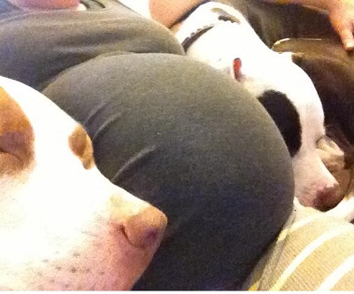
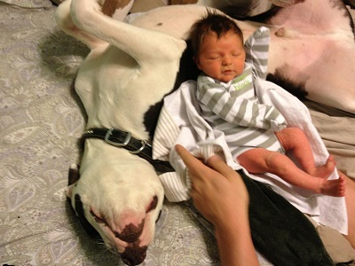
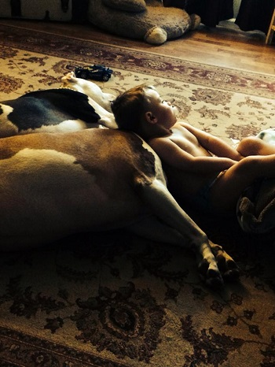
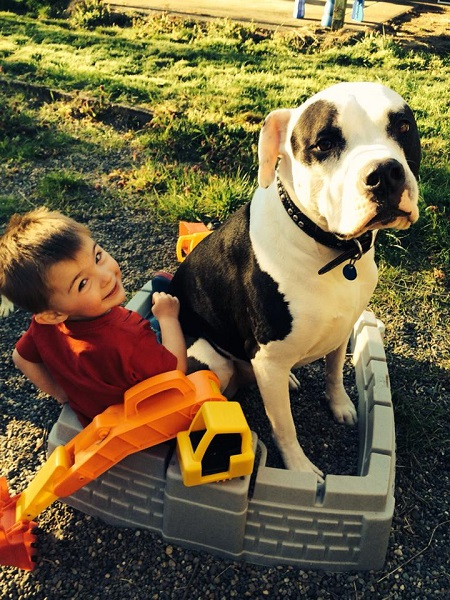
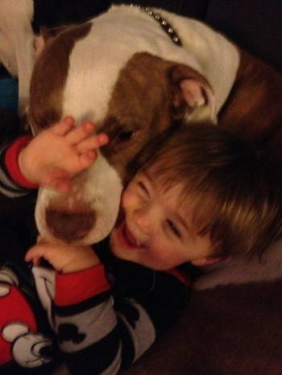
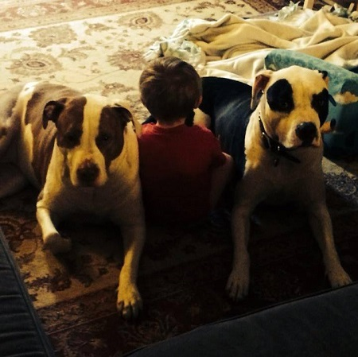

A Boy and His Dogs
The Beginning
The dogs were 4 years old when Jamieson was brought home from the hospital. Everyone asked if we were going to get rid of our dogs when the baby was born. NO! The dogs are family. People would say, "Aren't you worried that those pit bulls will hurt the baby?" Absolutely not!
The bonding between our big loveable pit bulls and our baby started from day one. ♥
 Fun Times Together
Over the years, Jamieson and our two pitties have become quite the trio. Lulu, our brown and white pittie, is very gentle and protective of Jamieson. Lucky, the black and white pittie, is very playful. Both dogs LOVE to give pittie kisses! Jamieson calls Lulu his, "Pretty Pittie". It is quite adorable.
  The Top Reasons Why a Boy Needs a Dog and What a Dog Can Teach the Boy:
- Responsibility
- Compassion
- Forgiveness
- Acceptance and tolerance
- Having fun
The Top Reasons Why Pitbulls are the Best Family Dogs
- Gentle
- Eager to please people
- Super loyal
- Great with kids
- Love to cuddle
Jamieson and his "Pitties" Favorite Things to do Together:
- Snuggle
- Chase each other
- Take naps together
- KISSES!
The Love between a Boy and His Dogs:
It has always been said that a dog is a man's best friend. This is true. A dog is loyal and is always by your side.
Dogs are not our whole life but they make our lives whole - Edgar Guest
There are many more adventures in store for this trio!

I cannot wait to see all of the memories that are made between Jamieson, Lulu and Lucky.
